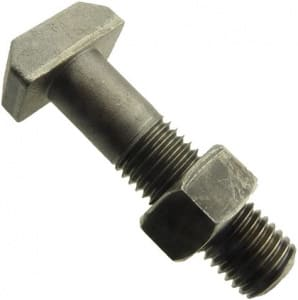

DIN 261 болт с T-образной головкой для пазов
Стандарт
DIN 261
Цена от
59,00 ₽
Размерный ряд
Неполная метрическая резьба от М6 до М24.
Болты » T-болт с T-образной головкой для пазов DIN 261
Варианты и размеры (27)
| Наименование | Размер | Длина, мм | Материал | Покрытие | Цена |
|---|---|---|---|---|---|
| DIN 261 болт с T-образной головкой для пазов L=100мм | 100 | 115,00 ₽ | |||
| DIN 261 болт с T-образной головкой для пазов L=110мм | 110 | 122,00 ₽ | |||
| DIN 261 болт с T-образной головкой для пазов L=120мм | 120 | 130,00 ₽ | |||
| DIN 261 болт с T-образной головкой для пазов L=130мм | 130 | 137,00 ₽ | |||
| DIN 261 болт с T-образной головкой для пазов L=140мм | 140 | 145,00 ₽ | |||
| DIN 261 болт с T-образной головкой для пазов L=150мм | 150 | 152,00 ₽ | |||
| DIN 261 болт с T-образной головкой для пазов L=160мм | 160 | 159,00 ₽ | |||
| DIN 261 болт с T-образной головкой для пазов L=170мм | 170 | 167,00 ₽ | |||
| DIN 261 болт с T-образной головкой для пазов L=180мм | 180 | 174,00 ₽ | |||
| DIN 261 болт с T-образной головкой для пазов L=190мм | 190 | 181,00 ₽ | |||
| DIN 261 болт с T-образной головкой для пазов L=200мм | 200 | 189,00 ₽ | |||
| DIN 261 болт с T-образной головкой для пазов L=25мм | 25 | 59,70 ₽ | |||
| DIN 261 болт с T-образной головкой для пазов L=30мм | 30 | 63,40 ₽ | |||
| DIN 261 болт с T-образной головкой для пазов L=35мм | 35 | 67,10 ₽ | |||
| DIN 261 болт с T-образной головкой для пазов L=40мм | 40 | 70,80 ₽ | |||
| DIN 261 болт с T-образной головкой для пазов L=45мм | 45 | 74,50 ₽ | |||
| DIN 261 болт с T-образной головкой для пазов L=50мм | 50 | 78,20 ₽ | |||
| DIN 261 болт с T-образной головкой для пазов L=55мм | 55 | 81,90 ₽ | |||
| DIN 261 болт с T-образной головкой для пазов L=60мм | 60 | 85,50 ₽ | |||
| DIN 261 болт с T-образной головкой для пазов L=65мм | 65 | 89,20 ₽ | |||
| DIN 261 болт с T-образной головкой для пазов L=70мм | 70 | 92,90 ₽ | |||
| DIN 261 болт с T-образной головкой для пазов L=75мм | 75 | 96,60 ₽ | |||
| DIN 261 болт с T-образной головкой для пазов L=80мм | 80 | 100,00 ₽ | |||
| DIN 261 болт с T-образной головкой для пазов L=85мм | 85 | 104,00 ₽ | |||
| DIN 261 болт с T-образной головкой для пазов L=90мм | 90 | 108,00 ₽ | |||
| DIN 261 болт с T-образной головкой для пазов L=95мм | 95 | 111,00 ₽ | |||
| DIN 261 болт с T-образной головкой для пазов M8 | M8 | 82,60 ₽ |